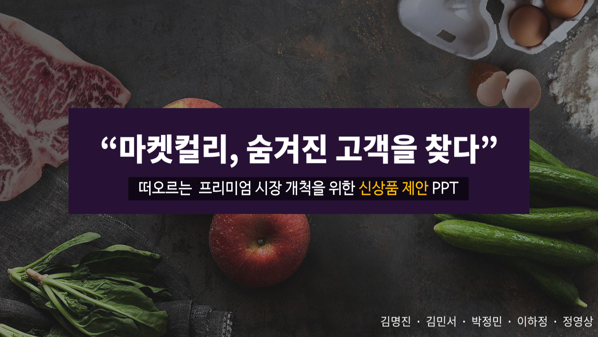
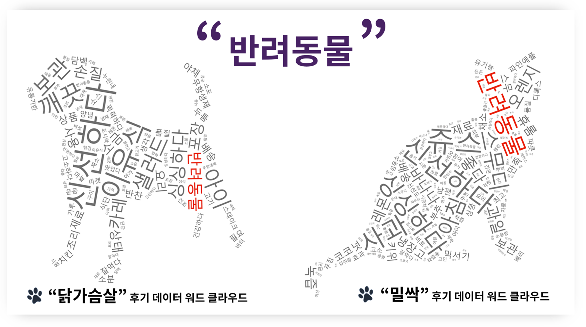

빅데이터 소셜마케팅

VIEW PROJECT
[기간] 2018.06.25 - 2018.11.30
[팀명] Fresh Five
[주제] (주) 마켓컬리 신시장 개척을 위한 신상품 기획
▲ 마켓컬리 신시장 개척을 위한 신상품 기획 PDF → download
[작품 소개]
Ⅰ. 온라인 신선 유통 시장의 퍼스트무버 마켓컬리 2015년 3월 본격적인 서비스를 시작한 온라인 프리미엄 마켓컬리는 차별화된 품질과 샛별배송이라는 서비스로 온라인 신선 유통 시장에서 업계 1위로 자리잡았습니다. 하지만 이마트, 현대, CJ와 같은 거대 유통기업과 11번가, 티몬과 같은 소셜커머스 업체들이 마켓컬리를 벤치마킹하여 온라인 새벽배송 시장에 대한 투자를 확대하고 있습니다. 이러한 위기 상황을 타파하기 위하여 마켓컬리 내의 신상품 기획팀 Fresh Five에서 신시장 개척을 위한 상품 기획에 착수하였습니다.
Ⅱ. Freshfive가 찾아낸 시장, 프리미엄 펫푸드 시장 빅데이터 기반 상품기획팀 FreshFive는 자사의 고객후기 데이터 분석 중 닭 가슴살과, 밀싹 상품의 후기에서 반려동물과 관련된 키워드가 상당히 높게 나오는 것을 파악하였습니다. 저희 팀은 그 원인 파악을 위하여 “반려동물 시장이 어떻게 변하고 있는지”에 대한 시장분석을 실시한 결과 반려동물 시장이 성장하고 프리미엄화 되고 있다는 현상을 파악하였습니다. 시장분석 후 네이버, 인스타그램, 트위터와 같은 소셜미디어 데이터를 수집하여 감성분석을 실시한 결과 소비자가 강아지에게 자연식을 제공하고 싶어하지만 ‘시간 부족’이라는 문제점을 도출해냈습니다. 저희 팀은 소비자가 느끼는 문제를 해결하기 위한 신상품을 기획하였습니다.
Ⅲ. 똑딱, 건강에 간편을 더하다 저희 팀은 소비자가 가장 중요하게 여기는 요소인 건강과 시간 부족이라는 키워드에 맞춰서 간편하게 먹일 수 있는 ‘똑딱’이라는 상품을 기획하였습니다. 똑딱은 마켓컬리 자사의 샛별배송 서비스를 통해 배송되기에 완벽한 신선도를 유지한 채로 고객의 집까지 안전하게 배송됩니다.
Ⅳ. 똑딱, 오프라인 & 온라인 마케팅 인스타그램과 네이버 블로그 명사형 키워드 분석을 실시한 결과 소비자가 재료, 그리고 건강이라는 키워드에 가장 민감한 것을 파악할 수 있었습니다. 따라서 저희 팀은 소비자가 직접 건강한 재료를 체험할 수 있는 다양한 마케팅 방안을 기획하였습니다. 또한 기존 인스타그램과 유튜브의 트렌드를 파악하여 그에 따른 새로운 광고, 쿠폰 마케팅을 기획하였습니다.
▲ 수집 데이터 → download
[분석 데이터]
- ① 분석 목표
- 마켓컬리만의 특성을 기반으로 신시장 개척을 위한 Data 분석
- ② 분석 대상
- 마켓컬리 자사분석
- 반려동물 시장, 트렌드 분석
- 반려동물 소비자 트렌드 분석
- 반려동물 소비자 니즈 분석
- ③ 주요 키워드 & 수집문건
- 브랜드 분석 키워드: 마켓컬리 / 샛별배송 / 상품후기 다수
- 시장분석 키워드: 반려동물 / 강아지 / 고양이 / 펫팸족 / 펫셔리 / 수제간식 / 애견간식 / 야채퓨레 / 연어
- 소비자 분석 키워드 : 자연식 / 생식 / 화식 / 수제간식 / 애견간식 / 연어+애견간식 / 연어+수제간식 / 야채퓨레 / 연어
- 총 수집 소셜문건 : 인스타그램 100건 / 네이버 블로그 10,035건 / 마켓컬리 고객후기 5,351건 / 네이버 카페 6,000건
- 총 수집 뉴스 : 네이버 뉴스 3,500건
- ④ 데이터 수집기간 & 채널
- 기간 : 2014.01.01 ~ 2018.08.16
- 채널 : D맵 / 소셜미디어(트위터, 인스타) / 포털(네이버 블로그, 카페) / 네이버 광고 / 네이버 트랜드 / 빅카인즈(뉴스) / 소셜메트릭스(다음) / Similar Web / 마켓컬리 사이트
- ⑤ 분석 & 시각화 프로그램
- 분석 : R / Python / Excel
- 시각화 : Photoshop / Illustrator / PowerPoint
[맡은 역할]
- 마켓컬리 고객후기 분석( Python)
- 마켓컬리 자사분석(